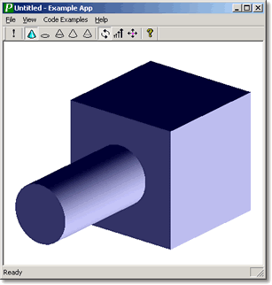

| |
About Parasolid |
| <<< Introduction | Chapters | Model Structure >>> |
Parasolid offers high performance modelling in a broad range of areas, giving you the ability to create new models or edit existing models using an unparalleled range of tools. The major areas of functionality supported include:
Parasolid also offers the developer unprecedented accuracy. Parasolid's default session precision is 1.0e-8 in a world size of 1.0e3. This gives an accuracy ratio of 1.0e11, which is an order of magnitude more accurate than that of any other kernel modeler.
The Parasolid API is C-callable, so that it can be integrated into any C or C++ application code. A binding for C# is also available, allowing you to call the Parasolid API from C# code.
Siemens PLM Software provides comprehensive technical support for the Parasolid library and all related products, via a dedicated team of specialists co-located with the Parasolid development team in Cambridge, UK. The Parasolid Support team are true subject matter experts who are experienced in both using and integrating the toolkits, as well as enabling customers to maximise the full potential that the Parasolid Toolkits offer.
All commercial Parasolid customers under a current maintenance agreement are entitled to a full range of world-class support services at no additional cost. These services include direct email and telephone access to Parasolid subject matter experts as well as the Siemens 24x7 GTAC on-line Support Centre. Siemens Parasolid Support is provided for all platforms, all releases (full releases and patch releases), bug fix resolutions to your reported problems and all cumulative bug-fixes implemented for all customers. Where appropriate and upon request, Siemens can also arrange for face-face or virtual meetings with support personnel.
Siemens takes a proactive and collaborative approach to support through establishing meaningful, long-term relationships with customers. Getting to know you and your company, your products, workflows, functionality requirements, project and technical problem resolution priorities and timelines enables us to provide you with the high standard of support that enables you to deliver maximum value to your own users.
Siemens also understands the frustration that dealing primarily with anonymous or automated helpdesk systems can lead to. Whichever way you chose to contact the Parasolid Support team, you can be assured that there will be a real and identifiable subject matter expert at the other end of the email or the telephone.
Siemens takes great pride in the consistently high scores that our customer support has received in our regular customer surveys and is constantly striving to improve the services offered.
Support is available to all registered Parasolid customers as well as evaluators. Regular update releases are made available to all customers when needed.
For more details please contact Parasolid Support by emailing
In the event you do find a problem with one of Siemens' Parasolid Toolkits, the XML-based debug reporting system is simple and streamlined and provides all the information the Parasolid Support team requires to speedily replicate and investigate the problem you are experiencing.
Additional tools to aid the visual debugging of geometry problems are provided as part of our Parasolid Jumpstart Kit material. Our journaling system also provides a record of all API calls made to the Parasolid Toolkits which assist in the debugging of application problems.
Releases of Parasolid Toolkits are frequent, regular and predictable. As a customer, this provides you flexibility with your own release schedules and confidence that you can release at any time with an up-to-date release of Siemens' software.
Full releases of Parasolid containing major functional enhancements are made available once every six months on average. This comprises a complete release of the product and is available both via a secure HTTP site and on DVD. Service packs (patch releases) containing resolutions to customer reported problems and minor functional enhancements are delivered on a frequent and regular cycle.
Parasolid provides full version control which enables you to switch on or off behaviour changes made to the Parasolid kernel at any given release, thereby giving you full control over the functionality you choose to have in your application.
Parasolid incorporates a plug-and-play mechanism that allows you to use any newer version of Parasolid at run time, without rebuilding your application. This can be helpful for testing and deploying bug fixes in a newer Parasolid version with minimal disruption to your application.
Every release of a Parasolid Toolkit is rigorously tested and is guaranteed to have successfully passed our extensive suite of all-platform functional and regression tests. Each nightly build of Parasolid is tested for functional and performance regressions with over 2.5 million tests including all faults ever fixed.The run-time plug-and-play compatibility of the Parasolid Toolkit APIs provides a stable and reliable foundation for the straightforward, worry-free integration of incremental toolkit libraries.
Parasolid toolkits are supported on an extensive range of platforms, which is reviewed regularly as new platforms emerge.
The Siemens PLM Components "Level Playing Field" policy ensures that each Parasolid release is made equally available to both commercial and Siemens internal product groups simultaneously.
The extensive Parasolid standard materials can be supplemented by our instructor-led training and consultancy services. See Section 2.3, “Parasolid Jumpstart Kit”, for more information on these materials. These services are available on request for an additional fee and can be conducted either at your facilities or occasionally at our offices in Cambridge, UK.
Prospective customers are allocated a dedicated single-point-of-support contact who is personally available to answer all initial questions and help guide them through their evaluation of the Parasolid Toolkits.
The Parasolid Support team has extensive experience working with companies with a variety of objectives and backgrounds. For example:
In conclusion, Siemens’ goal is to support the successful development of customers’ Parasolid applications. Our win-win business model means we have a mutual interest in providing assistance which allows you to shorten your time to market. We look forward to working with you.
For more details please contact Parasolid Support by emailing
The Parasolid Jumpstart Kit provides material aimed at helping new users get up to speed self-sufficiently, quickly and straightforwardly with Parasolid. Using the Parasolid Jumpstart Kit as a structured learning aid, users can rapidly become adept at coding with Parasolid. Together with the support and documentation provided, this assists an accelerated implementation, and enables you to get your new products and enhancements to market faster.
The Parasolid Jumpstart Kit is equally well-suited to new customers, existing customers who need to train new employees and to experienced users exploring an unfamiliar area of functionality for the first time.
The material is coherently presented through a single web portal which leads users through the material in a structured manner, helping to make their initial experience with the toolkit a positive and constructive one and breaking down perceived barriers to implementation.
The overview documentation (this manual) provides a comprehensive, high-level summary of the nature and scope of Parasolid functionality. This material serves a valuable role for both development and business audiences when forming an initial understanding of the scope and depth of Parasolid functionality without introducing the specifics of the API. More detailed knowledge can subsequently be assimilated as required using further resources within the Parasolid Jumpstart Kit.
Three structured training presentations are provided to introduce the user to the key Parasolid concepts, functionality and the APIs in three essential subject areas: Parasolid Fundamentals, Modelling Functionality and System Design. These enable the reader to quickly become immersed in the capabilities and concepts that are central to hands-on development with Parasolid.
Example Parasolid applications written in both C++ and C# provide a platform for understanding the architecture and integration of a Parasolid application. Consisting of full, commented source code and backed up by further documentation, these applications provide sample integrations of file and memory management, error handling, and display using both Direct-X and Open GL.
Figure 2-1 The Parasolid Example Application
Getting started material leads the user through each of the initial steps involved when constructing a Parasolid application using the C++ Example Application as a contextual example.
Working, fully-commented code examples in C++ and C# are provided to assist the user in calling many of the commonly-used Parasolid APIs. You can quickly discover how to call a particular API and learn about its most useful options using these code examples.
The logical grouping by functionality provides a hierarchy which is simple to browse and enables you to quickly locate examples which are relevant to a particular usage scenario. Each code example can be executed and stepped-through in a structured and consistent manner in one of the example applications, and the viewing window allows you to see the results of the API calls at each step.
Workshop.Net is a Parasolid-based application supporting model viewing, model analysis, and modelling operations. The Parasolid Application Framework is a collection of widely applicable, re-usable, modular classes and functions.
Both Workshop.Net and the Parasolid Application Framework ship with modular and fully commented source code and are readily extensible for prototyping and accelerated application development.
For more information on Workshop.Net, see Section 2.5, “Workshop.Net”.
The comprehensive Parasolid Documentation suite is also integrated into the Parasolid Jumpstart Kit. For more information on the documentation, see Section 2.4, “User documentation”.
Extensive user documentation is provided for each of the Parasolid Components. The comprehensive information contained in the documentation is your first point of reference for anything you wish to know about the products (and more).
The user documentation presents often complex subjects in a simple and straightforward style, with frequent use of pictures helping you get directly to the key relevant facts.
Documentation is organised into two principal subject areas:
Additional documentation covering other subject matters such as high-level overview information, getting started and integration material, new functionality in the latest release, guides on our example applications and the problem reporting process is also provided as part of our far-reaching core documentation sets.
The documentation is structured logically into key books, volumes and chapters - making it simple to rapidly locate the information you need. Full text search capabilities are also included, together with indices and glossaries of key terminology to further enhance the usability experience.
Our documentation sets are provided by default in both HTML and PDF formats, providing flexibility for both on-line and printed media to suit your preferred way of working.
In addition to the core documentation sets, extensive documentation also accompanies the various example code and other example applications provided as part of the Parasolid Jumpstart Kit.
All user documentation is used and reviewed by Customer Support personnel, and Technical Authors receive feedback and requests directly from customers.
Workshop.Net is an extensible Parasolid-based application supporting model viewing, model analysis, and modelling operations. Workshop.Net ships with full source code, and facilitates accelerated application development: you can implement Parasolid workflows in a ready-made and fully interactive environment.
Workshop.Net's source code shows how Parasolid functions may be used in practice.
The code is written in C# and is modular, fully commented and designed for maximum readability and maintainability. The user interface is built with Windows Forms, allowing easy customisation.
Workshop.Net includes a powerful plugin mechanism that lets you integrate your own C# code into the application. Workshop.Net ships with a number of example plugins:
To extend the application, you can create self-contained libraries (plugins) which communicate with the application via events, or you can adjust and augment the existing code.
The source code provided with Workshop.Net includes implementations of many widely applicable, re-usable, modular classes and functions including the following features:
The Workshop.Net source code provides further functionality which is particularly useful for analysis of Parasolid models.
Workshop.Net is supplied with comprehensive documentation that includes:
Figure 2-2 Parasolid Workshop.Net
| <<< Introduction | Chapters | Model Structure >>> |